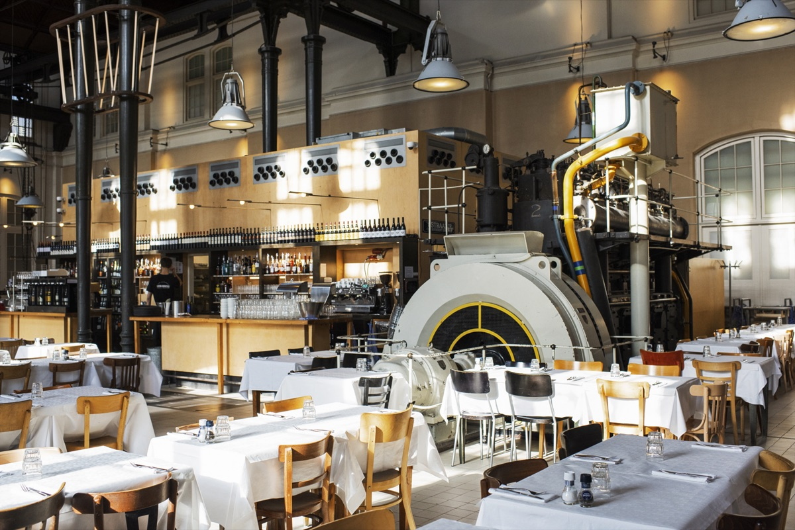
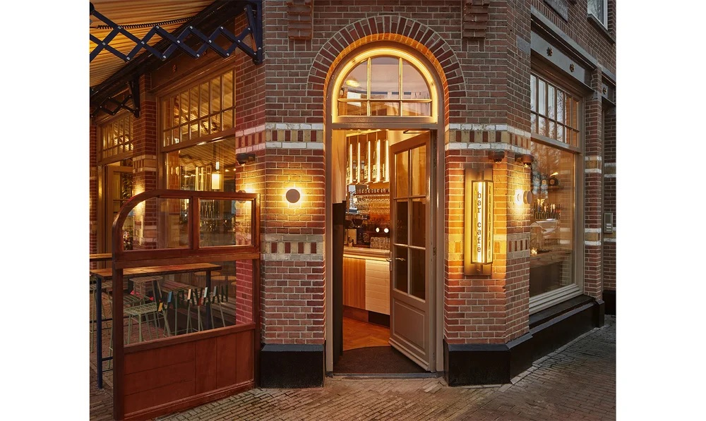
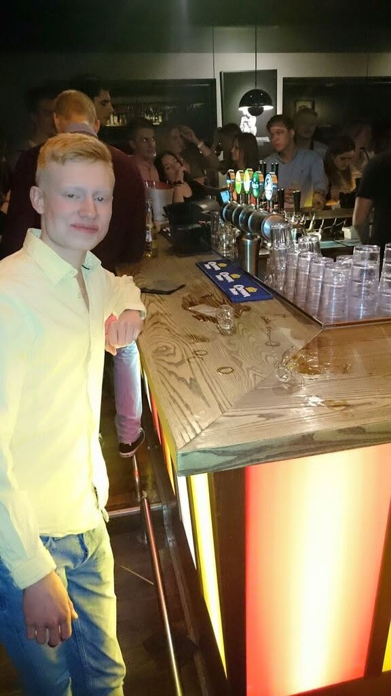
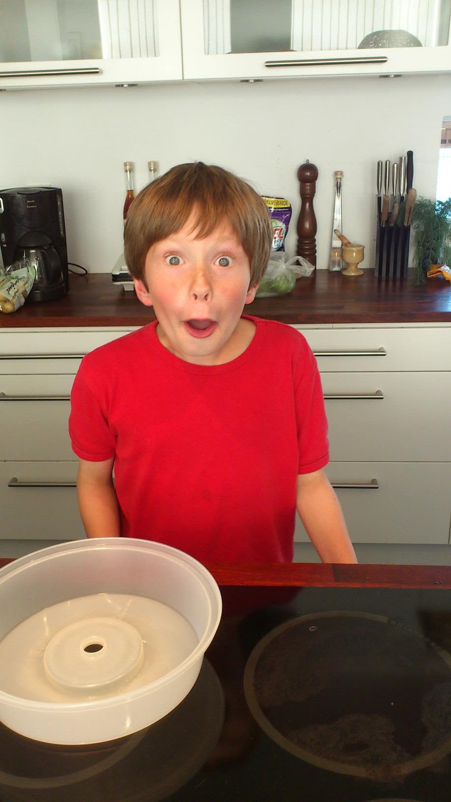
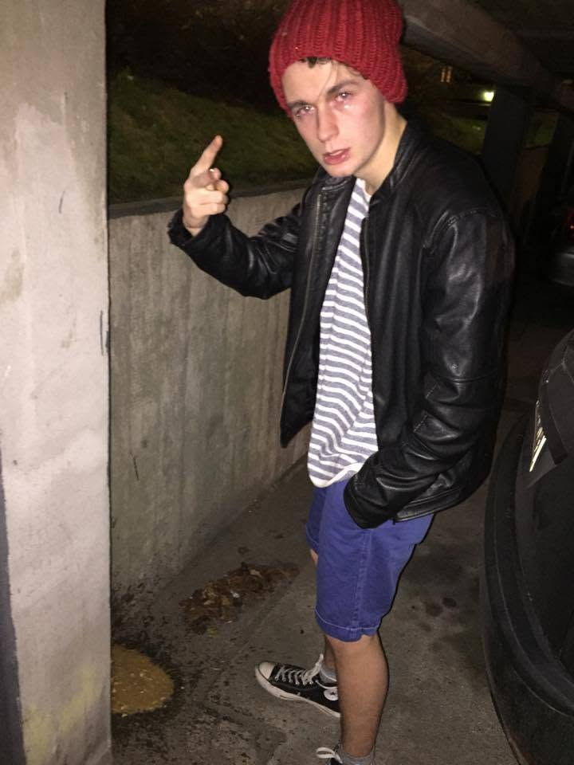
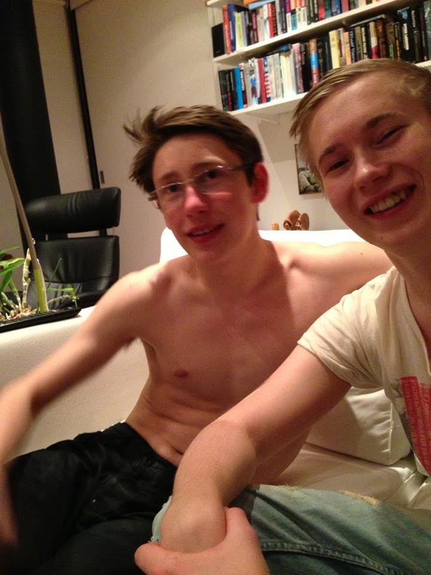

De tre kryssen
Stadens klassiska symbol. De betyder Amsterdam, inte att webbplatsen plötsligt fått åldersgräns.
Boka helgen
Tre dagar. Två flygrutter. Minst tre gånger någon ropar ”akta cykeln!”.
Två avgångar. Samma kollektiva dåliga inflytande.
Helgens rytm
Det viktigaste är spikat. Resten är lika flexibelt som en cyklist i en nederländsk korsning.
Landning & stadspuls
Gäster flyger in från Köpenhamn och Stockholm Arlanda. Vi synkar när flygen är bokade.
Exakta tider meddelasFörsta skålen, första kanalen och den högtidliga frågan: ”vilket håll är hotellet?”.
Plats meddelasNågot gott, någonstans trevligt. Sedan promenerar vi genom centrala Amsterdam och låter kvällen hitta sin egen väg. Google Maps får vara gruppens mest ansvarstagande medlem.
Plats och tid meddelasKanaltempo & födelsedagskväll
Vi börjar mjukt, äter ordentligt och laddar för kanalen.
Plats och tid meddelasBåt, broar och staden från sin bästa vinkel. Praktiska detaljer kommer närmare helgen.
Tid och samlingsplats meddelasHelgens stora middag i en gammal maskinhall. Kom hungrig; den industriella inredningen är imponerande men svår att äta.
Spikat
Vi fortsätter kvällen med glasen höjda, tegelväggarna glödande och ambitionsnivån för söndagen sjunkande.
Spikat
Kaffe & hemresa
Kaffe, något att äta och tid att gå igenom gårdagens kamerarulle med den akademiska frågan: ”varför tog vi sjutton nästan identiska bilder?”.
Efter ork och flygtiderVi tar oss till flygplatsen i god tid och säger på återseende, inte farväl.
Resa efter egen bokningStadens DNA
Fyra lokala signaler att känna igen. En är en trafikvarning.
Stadens klassiska symbol. De betyder Amsterdam, inte att webbplatsen plötsligt fått åldersgräns.
Neon, tegel och kvällspuls. Vi håller oss på promenadavstånd från både festen och vettet.
Titta vänster, höger och sedan vänster igen. Ringklockan är inte applåder, även om det kan kännas så.
Amsterdam är avslappnat. Vi är vuxna, tar det lugnt och håller koll på både tempot och varandra.
Ur arkivet
Amsterdam får bli nästa kapitel.




Liten stadsguide
Amsterdam i oktober kan skifta snabbt. Ta med regntåligt ytterlager och skor som gillar kullersten.
Cykelbanan är trafik, inte trottoar. Titta åt båda håll och låt lokala cyklister ha sin fil. De har fart, företräde och tydliga åsikter.
Promenad och kollektivtrafik räcker långt. Håll resplanen enkel och ha betalmedel redo. Ingen vill bli personen som diskuterar zonbiljett i gruppchatten klockan 01:14.
Exakta flygtider, samlingsplatser och de flexibla stoppen delas när bokningarna är klara.